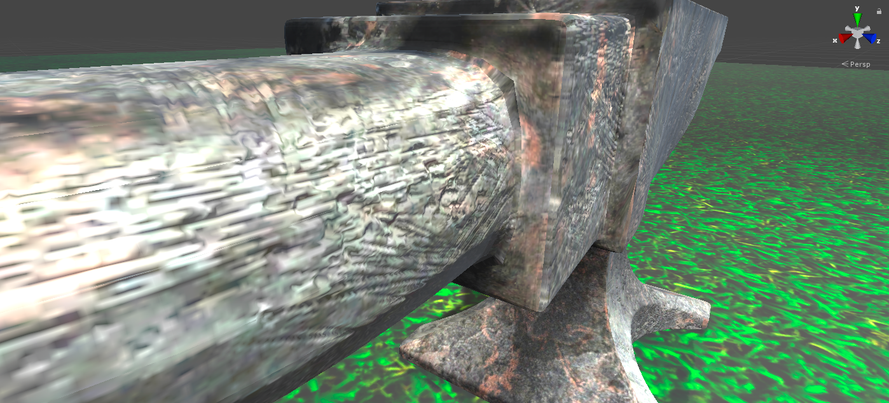

Height Map
For å vise detaljer på en modell uten å gjøre det vanskelig for datamaskinen, kan man vise den originale modellen, så tegne på hakkene og ripene. Det man tegner på modellen lagres på et bilde, og da kan man bruke det bildet til å fortelle datamaskinen hvor på modellen hakken og ripene skal være. Datamaskinen tar da og endrer høyden av overflaten etter bildet. Dette krever mindre tid for maskinen enn hvis du hadde endre hele modellen, fordi da hadde den blitt mye mer komplisert og antallet overflater (som skal tegnes) hadde økt betraktelig.
Bildet skal være et bilde uten farger, bare verdier mellom svart og hvitt. Svart er der høyden på overflaten går innover, og hvitt er der det går utover. Under kan du se et eksempel på en ambolt som jeg har modellert i programmet Blender, og deretter flyttet over til spillmotoren Unity. Du kan se forskjellen på modellen med og uten height map. Nederst kan du også se Height mappet som ble brukt på ambolten.